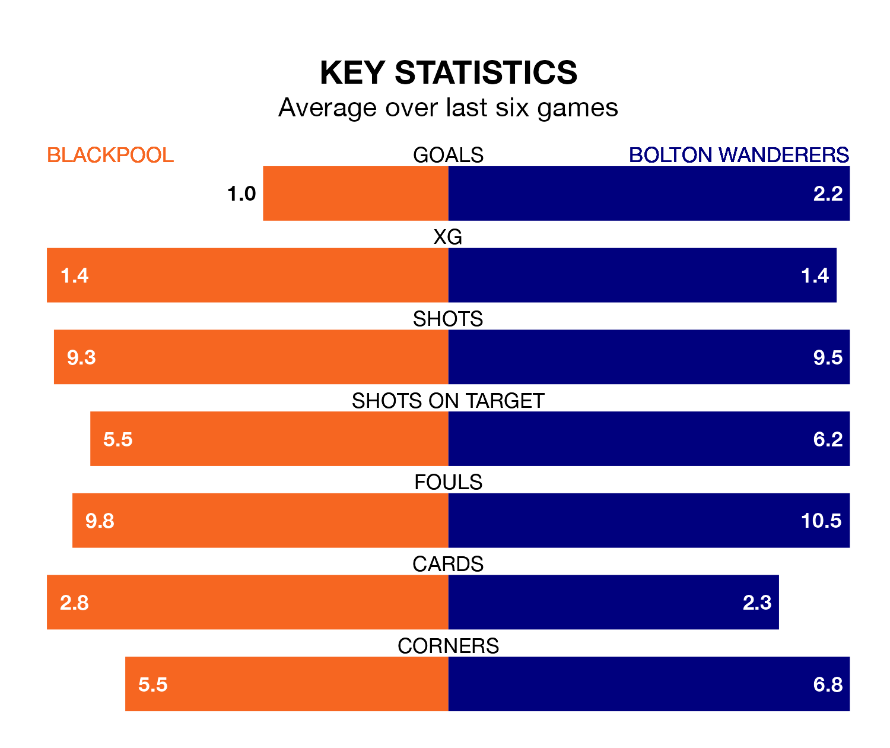

Bolton Wanderers face Blackpool on Saturday seeking to protect their long unbeaten run in EFL League One.
Bolton are unbeaten in seven, with four wins and three draws, ahead of the 3pm kick-off.
They face a Blackpool team who have won three and drawn two over the same number of games.
With 59 goals in 32 games so far this season, Bolton are the league's second-highest scorers with 1.8 goals per game. And they are conceding fewer than average, letting in 33 goals at a rate of 1.0 per game.
Blackpool are also above average scorers, with 1.5 goals per game, compared to a league average of 1.3. They have conceded 1.2 goals per game.
Wanderers are third in the table after 32 games, of which they have won 20 and drawn six, earning 66 points.
The Seasiders are five places behind the visitors in eighth, with 14 wins and eight draws putting them on 50 points.
With Nathan Baxter between the sticks, Bolton can rely on one of the league's safest pair of hands. He has kept 12 clean sheets in his 28 appearances this season, and only one other 'keeper – Portsmouth's Will Norris – has been able to prevent the opposition scoring on more occasions in EFL League One.
In the home side's net, Daniel Grimshaw has 11 clean sheets in 32 games. He has conceded a goal every 80 minutes, 30% more often than the 101 minutes between goals for Baxter.
In the last 10 years, Blackpool and Bolton have played each other on nine occasions. Blackpool won two of them, Bolton three, and they drew four times.
On average, the Seasiders scored 0.9 goals and Bolton 0.9 in those matches.
Their last meeting was on January 30, when they played out a 0-0 draw.
Blackpool's last match was on February 17, a 2-1 win against Peterborough United, with Karamoko Dembele and Shayne Lavery getting the goals for the Seasiders.
Bolton beat Cambridge United 2-1 last time out, on Tuesday, with Carlos Mendes Gomes and Paris Maghoma on the scoresheet.
Updated: 10:08 (UTC), 23/02/24